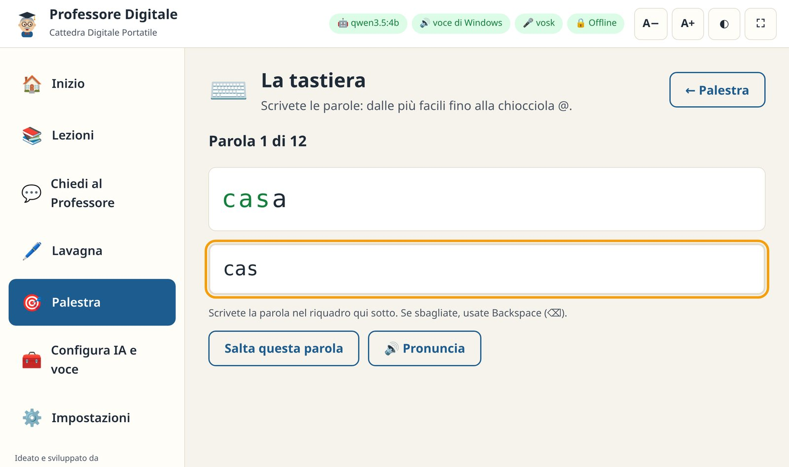

Vademecum e libro di istruzioni per Windows · da XP a Windows 11
Imparare il digitale, con calma e senza Internet.
Lezioni guidate · Assistente a voce Lavagna · Palestra di mouse e tastiera IA locale scelta su misura per il vostro PC
100% offlinePrivacy per costruzioneWindows XP · Vista · 7 · 8 · 10 · 1132 e 64 bitSoftware libero · MIT
Danilo D'AuriaIdeazione e sviluppo · Tecnico IT & Divulgatore Digitale per il Sociale
v2.3Ottobre 2026
Come usare questo vademecum
Questo libretto accompagna chi installa il Professore Digitale su computer Windows, chi conduce gli incontri e chi lo usa per imparare.
Non serve leggerlo tutto: ogni capitolo sta in piedi da solo. Esiste un vademecum gemello per i computer Linux (Debian, Ubuntu, Mint, FeniceOS):
le lezioni, la guida e i pacchetti di contenuti sono gli stessi.
Se siete…
Leggete prima
Chi installa il programma (tecnico, volontario, rigeneratore di PC)
Capitoli 2, 3, 10, 14, 15 e 16
Insegnante o facilitatore che guida un gruppo
Capitoli 4–9, 11 e 12
Allievo che usa il programma da solo
Capitoli 4, 5, 6, 8 e il Glossario (17)
Convenzioni
I tasti sono indicati così: Invio, Ctrl + Alt + Canc, Windows + E
(il tasto Windows è quello con il logo, in basso a sinistra). I percorsi dei menu sono in grassetto: Start → Impostazioni.
I comandi da scrivere sono in carattere a macchina. I riquadri verdi contengono consigli, quelli gialli attenzioni.
Novità della versione 2.3Versione per Windows con installatore unico da XP a Windows 11 · configurazione automatica dell'intelligenza artificiale in base
all'hardware · chiavetta per i PC senza Internet · gli occhi del Professore seguono il mouse · 19 nuove risposte su Windows.
Professore Digitale – Cattedra Digitale Portatile, versione 2.3.0 per Windows.
Ideato e sviluppato da Danilo D'Auria, Tecnico IT & Divulgatore Digitale per il Sociale — danilodauria.site@gmail.com
Software libero rilasciato con licenza MIT. Componenti di terze parti: Mermaid (MIT), zlib (zlib), Vosk (Apache 2.0); quelli facoltativi
(Ollama, KoboldCpp, modelli di IA, Piper, Supermium) hanno le proprie licenze, elencate nel file LICENZE.txt.
Questo vademecum può essere stampato, copiato e distribuito liberamente, anche allegato ai computer rigenerati.
Windows è un marchio di Microsoft Corporation; il Professore Digitale è un progetto indipendente.
Indice
1Benvenuti nella Cattedra DigitaleChe cos'è, a chi serve, i suoi principi
2Di cosa avete bisognoVersioni di Windows, computer, browser, file forniti
3InstallazioneInstallatore, aule, versione da chiavetta, versione portatile
4Il primo avvioLa finestra, l'icona vicino all'orologio, il Professore e i suoi occhi
5Le LezioniIl percorso, i passi, lo schema, il quiz
6Chiedi al ProfessoreDomande scritte e a voce, guida interna e IA
7La LavagnaSchemi pronti e disegno libero
8La PalestraEsercizi di mouse e tastiera
9Impostazioni e accessibilitàVista, voce, IA, dati, aggiornamenti
10IA, microfono e voce: la configurazione automaticaCome sceglie il modello, Ollama e motore compatibile, la chiavetta
11Guida per il facilitatorePreparare l'aula, condurre un incontro, consigli pratici
12Privacy e sicurezzaDove stanno i dati, cosa non fa il programma
13Manutenzione, aggiornamenti e disinstallazioneBackup, aggiornare, togliere tutto
16Windows XP e VistaIstruzioni speciali per i computer più anziani
17Glossario sempliceLe parole del digitale spiegate in breve
§§c1§§
1
CAPITOLO
Benvenuti nella Cattedra Digitale
Il Professore Digitale è un insegnante paziente che vive dentro il computer. Spiega l'informatica di base con parole semplici,
disegna schemi alla lavagna, risponde alle domande a voce e fa esercitare mouse e tastiera. E lo fa senza bisogno di Internet.
Figura 1. La schermata iniziale su Windows: il Professore saluta il corso,
propone la prossima lezione e mostra i progressi. In alto, le «pastiglie» verdi dicono che IA, voce di Windows e microfono sono attivi.
A chi è rivolto
È pensato per i luoghi dove il divario digitale si sente di più: centri anziani, circoli culturali, biblioteche, parrocchie, scuole,
associazioni e famiglie. Funziona bene anche dove la connessione è assente o instabile, perché tutto il lavoro avviene sul computer.
La versione per Windows permette di usarlo sui computer che già ci sono, dal vecchio portatile con Windows XP al PC nuovo con Windows 11.
I principi del progetto
Offline per davvero. Lezioni, guida, lavagna, palestra e voce funzionano senza rete. Internet serve solo, e una volta sola, per aggiungere i componenti facoltativi.
Privacy per costruzione. Domande, risposte e progressi restano sul computer. Nessun account, nessun tracciamento, nessun abbonamento.
Tecnologia gentile e riuso. Il programma è leggero (meno di 10 MB) e si adatta da solo a ciò che il computer può fare: meno rifiuti elettronici, più persone connesse.
Su misura. Prima di installare l'intelligenza artificiale, il Professore esamina il computer e sceglie il modello più adatto: né troppo grande (lento), né troppo piccolo.
Non si blocca mai. Se l'IA non c'è, o non risponde, il Professore usa la sua guida interna. L'allievo riceve sempre una risposta.
Trasparenza. Il programma non si collega a Internet da solo: aggiornamenti e scaricamenti partono solo se lo chiedete voi.
Cosa trovate dentro
Sezione
A cosa serve
📚
Lezioni
15 lezioni guidate (circa 5 ore in tutto), ognuna con passi brevi, uno schema alla lavagna, lettura ad alta voce e un quiz finale.
💬
Chiedi al Professore
Domande scritte o a voce. Risponde la guida interna (92 risposte pronte, di cui 19 dedicate a Windows, più il testo delle lezioni) oppure l'IA locale.
🖊️
Lavagna
Decine di schemi pronti da mostrare al gruppo e un foglio per disegnare con gessetti colorati.
🎯
Palestra
Quattro esercizi: clic, doppio clic, trascinamento, tastiera. Con record personali.
🧰
Configura IA e voce
Esame del computer e installazione guidata di intelligenza artificiale, microfono e voce naturale; chiavetta per i PC senza rete.
⚙️
Impostazioni
Testo più grande, colori ad alto contrasto, modalità proiettore, voce, occhi che seguono il mouse, salvataggio dei progressi.
§§c2§§
2
CAPITOLO
Di cosa avete bisogno
Il Professore Digitale si accontenta di poco: il programma di base funziona su qualsiasi Windows da XP in poi. Solo l'intelligenza
artificiale chiede un computer più recente e un po' di memoria.
Che cosa funziona su quale Windows
Sistema
Lezioni, guida, lavagna, palestra
Voce
Microfono
IA locale
Windows 11, Windows 10 22H2
✔
✔ Windows + Paola
✔ (64 bit)
✔ Ollama
Windows 10 non aggiornato (prima del 22H2)
✔
✔
✔ (64 bit)
✔ motore compatibile
Windows 8 e 8.1
✔
✔
✔ (64 bit)
✔ motore compatibile (64 bit)
Windows 7 SP1
✔
✔
✔ (64 bit)
✔ motore compatibile (64 bit)
Windows Vista
✔ con Supermium
✔ se c'è una voce italiana
—
— guida interna
Windows XP SP3
✔ con Supermium
✔ se c'è una voce italiana
—
— guida interna
Qualsiasi Windows a 32 bit
✔
✔
—
— guida interna
«Motore compatibile» è KoboldCpp, un programma che fa girare i modelli di IA anche sui Windows che Ollama non supporta (capitolo 10).
Supermium è un browser moderno costruito apposta per Windows XP e Vista (capitolo 16).
Il computer
Uso
Memoria (RAM)
Processore
Spazio su disco
Programma di base lezioni, guida, lavagna, palestra, voce di Windows
1 GB (XP, Vista, 7) · 2 GB (8, 10, 11)
Qualsiasi, anche 32 bit
10 MB
Con microfono (Vosk)
2 GB
64 bit
+ 110 MB
Con IA locale, PC datato
4 GB
64 bit, 2 core
+ 1–2 GB
Con IA locale, PC normale
8 GB
64 bit, 4 core con AVX2
+ 3–5 GB
Con IA locale, PC recente o con scheda video
16–32 GB, oppure scheda video NVIDIA/AMD da 6–12 GB
64 bit
+ 7–10 GB
Servono anche uno schermo, altoparlanti o cuffie per la voce e, per fare domande a voce, un microfono (anche quello del portatile o della webcam).
Il browser
Il Professore si mostra dentro un browser, in una finestra pulita, senza barre. Lo sceglie da solo: Microsoft Edge (già presente in
Windows 10 e 11), Google Chrome, Supermium, Brave o Vivaldi; in mancanza usa Firefox. Su Windows 7 e 8 vanno bene le ultime
versioni di Edge e Chrome per quei sistemi. Internet Explorer è troppo vecchio: se il Professore si apre lì, compare un messaggio con le istruzioni.
I file che ricevete
File
Cos'è
ProfessoreDigitale-Setup-2.3.0.exe
L'installatore per Windows, unico per tutti i sistemi da XP a 11, a 32 e 64 bit (circa 9 MB).
professore-digitale-windows-2.3.0.zip
La versione da chiavetta: si estrae e si usa senza installare; i progressi restano sulla chiavetta.
professore-digitale-portatile.html
La versione da aprire con doppio clic in qualsiasi browser, senza installazione (senza IA e senza microfono).
professore-digitale_2.3.0_all.deb
Il pacchetto per i computer Linux.
SHA256SUMS
Le «impronte digitali» dei file, per verificare che siano integri.
Installatore o versione portatile?
Installate il programma sui computer dell'aula: offre la voce di Windows, il microfono, l'IA locale, l'icona vicino all'orologio e il salvataggio su disco.
Usate la versione da chiavetta sui computer che non potete modificare (biblioteca, ufficio) e la versione portatile .html per una prova veloce.
§§c3§§
3
CAPITOLO
Installazione
Un solo installatore va bene per tutti i computer Windows. L'installazione non scarica nulla da Internet e richiede meno di un minuto.
Metodo A · Con il mouse (consigliato)
Copiate ProfessoreDigitale-Setup-2.3.0.exe sul desktop o nella cartella Download e fate doppio clic.
Se compare la finestra blu «Windows ha protetto il PC», fate clic su Ulteriori informazioni e poi su Esegui comunque (vedi riquadro).
Scegliete per chi installare: «Per tutti gli utenti» (consigliato nelle aule: serve la password di amministratore) oppure
«Solo per me» (non chiede nessuna password).
Lasciate le spunte proposte: programma, icona sul desktop e — sui Windows a 64 bit — il motore del microfono.
Al termine lasciate la spunta su «Configura subito IA e voce» se il computer è collegato a Internet: il Professore si apre e vi guida (capitolo 10).
Altrimenti scegliete solo «Apri il Professore Digitale».
Perché Windows avvisa?
SmartScreen mostra quell'avviso per tutti i programmi nuovi che non hanno ancora una «firma digitale» a pagamento. Il Professore è software libero:
il suo codice è pubblico e ogni file ha un'impronta SHA-256 verificabile. Scaricatelo solo dal sito del progetto o dalla chiavetta del corso.
Alcuni antivirus possono chiedere conferma la prima volta: è normale.
Metodo B · Per molti computer (aule, centri, scuole)
L'installatore accetta opzioni per lavorare senza domande, utili con gli strumenti di distribuzione o da un file .bat sulla chiavetta:
rem per tutti gli utenti, in silenzio (da amministratore)
ProfessoreDigitale-Setup-2.3.0.exe /S /AllUsers
rem solo per l'utente attuale, senza password
ProfessoreDigitale-Setup-2.3.0.exe /S /CurrentUser
I progressi degli allievi stanno nel profilo di ciascun utente di Windows: con un account per allievo, ognuno ritrova il proprio percorso.
Metodo C · Versione da chiavetta (senza installare)
Estraete professore-digitale-windows-2.3.0.zip sulla chiavetta (tasto destro → Estrai tutto).
Aprite la cartella ProfessoreDigitale e fate doppio clic su ProfessoreDigitale.exe.
I progressi vengono salvati nella sottocartella dati, accanto al programma: la chiavetta passa da un PC all'altro con il proprio percorso.
Metodo D · La versione portatile
Doppio clic su professore-digitale-portatile.html: si apre nel browser e funziona subito, anche da chiavetta. I progressi vengono ricordati dal browser di quel computer.
Verificare l'integrità del file (facoltativo)
Se il file è passato da molte chiavette, controllate che non si sia rovinato. Nella cartella del file, tenendo premuto Maiusc, fate clic destro in uno spazio vuoto,
scegliete Apri finestra PowerShell qui (o Prompt dei comandi) e scrivete:
Il codice che compare deve essere uguale a quello scritto accanto al nome del file in SHA256SUMS (si apre con il Blocco note).
ConsiglioPer preparare molti computer, mettete su una chiavetta l'installatore, questo vademecum e la cartella
ProfessoreDigitale-kit con l'IA e la voce già pronte (capitolo 10): in pochi minuti ogni PC è completo, anche senza Internet.
§§c4§§
4
CAPITOLO
Il primo avvio
Fate doppio clic sull'icona Professore Digitale sul desktop, oppure cercatela nel menu Start.
Dopo qualche secondo si apre una finestra pulita, senza le barre del browser.
Cosa succede dietro le quinte
L'icona avvia un piccolo programma invisibile che lavora solo dentro il computer (all'indirizzo http://127.0.0.1:8765) e apre
l'interfaccia nel browser. Se l'icona viene premuta di nuovo, il programma non si duplica: riapre la finestra. Quando tutte le finestre del
Professore restano chiuse per quattro minuti, si spegne da solo per non consumare memoria.
L'icona vicino all'orologio
Mentre il Professore è attivo, la sua icona compare nell'area di notifica, in basso a destra accanto all'orologio (su Windows 10 e 11 può essere
nascosta sotto la piccola freccia ^).
Azione
Cosa fa
Clic sull'icona
Riapre la finestra del Professore.
Tasto destro → Configura IA e voce
Apre la configurazione guidata (capitolo 10).
Tasto destro → Vademecum (PDF)
Apre questo libretto.
Tasto destro → Cartella dei progressi
Mostra dove sono salvati progressi e impostazioni.
Tasto destro → Chiudi il Professore Digitale
Spegne il programma (non si perde nulla).
La barra in alto
Pastiglia
Significato
🤖 nome del modello / 🤖 Guida interna
Quale «cervello» risponde: l'IA locale oppure la guida interna.
🔊 voce di Windows / voce naturale
Il motore della voce in uso.
🎤 vosk / microfono spento
Se le domande a voce sono attive.
🔒 Offline
Promemoria: tutto resta su questo computer.
Pulsante
Cosa fa
■ Stop voce (rosso)
Compare mentre il Professore parla: lo fa tacere subito. Anche Esc ferma la voce.
A− e A+
Rimpiccioliscono o ingrandiscono tutto il testo.
◐
Cambia i colori: chiaro, scuro, alto contrasto.
⛶
Modalità proiettore: schermo intero, testo grande, menu nascosto.
Il Professore, i suoi stati e i suoi occhi
Il personaggio con il tocco e gli occhiali cambia espressione per far capire cosa sta facendo: un aiuto prezioso per chi è alle prime armi.
Da questa versione i suoi occhi seguono il puntatore del mouse: ogni occhio guarda per conto suo (se avvicinate il mouse al viso, gli occhi
si avvicinano tra loro come fanno i nostri), il movimento è morbido, le palpebre sbattono a intervalli irregolari, le pupille si allargano con i colori scuri
e quando nessuno muove il mouse il Professore si guarda un po' intorno. Mentre l'allievo scrive una domanda, il Professore guarda la casella di testo.
Figura 2. Lo sguardo segue il mouse: in alto a sinistra, in basso, a destra.
Stato
Come si riconosce
Pronto ad aiutarvi
Sbatte le palpebre e segue con lo sguardo il mouse.
Vi ascolto…
Onde arancioni vicino all'orecchio e sopracciglia alzate: il microfono è acceso.
Sto pensando…
Nuvolette sopra la testa e sguardo verso l'alto: sta preparando la risposta.
Sto spiegando…
La bocca si muove: sta leggendo ad alta voce.
Chi preferisce un'immagine ferma può spegnere gli occhi mobili in Impostazioni → Vista. Se in Windows è attiva l'opzione
«Mostra animazioni» spenta (riduzione del movimento), gli occhi restano fermi da soli.
§§c5§§
5
CAPITOLO
Le Lezioni
Il cuore della Cattedra è un percorso di 15 lezioni, dal primo contatto con il computer fino ai servizi pubblici digitali,
agli acquisti sicuri e all'intelligenza artificiale. Ogni lezione dura dai 15 ai 25 minuti.
Il catalogo
Lezione
Livello
Min.
Obiettivo
🖥️
Il computer: com'è fatto
Primi passi
15
Conoscere le parti del computer, accenderlo e spegnerlo nel modo giusto.
🖱️
Usare il mouse
Primi passi
20
Clic, doppio clic, clic destro, trascinare.
⌨️
La tastiera senza paura
Primi passi
20
Scrivere, correggere, maiuscole, chiocciola @.
🪟
Il desktop e le finestre
Primi passi
15
Orientarsi sul desktop, ridurre, ingrandire e chiudere finestre.
📁
File e cartelle: l'armadio digitale
Intermedio
20
Salvare, ritrovare, cestino, chiavetta USB.
🌐
Internet e il browser
Intermedio
20
Cos'è Internet, cercare, riconoscere i siti affidabili.
✉️
La posta elettronica
Intermedio
20
Scrivere un'email, allegare una foto, riconoscere lo spam.
📱
Smartphone, messaggi e videochiamate
Intermedio
20
Messaggi, vocali e videochiamate con i propri cari.
🖼️
Foto e ricordi al sicuro
Intermedio
15
Passare le foto dal telefono al computer, ordinarle, farne copie.
🔐
Password e sicurezza
Sicurezza
20
La frase segreta, dove conservarla, la verifica in due passaggi.
🛡️
Riconoscere le truffe online
Sicurezza
25
Phishing, SMS falsi, finti tecnici; cosa fare se si è stati truffati.
🛒
Acquisti e pagamenti online sicuri
Sicurezza
20
Scegliere il negozio, pagare in modo protetto, riconoscere i falsi.
🏛️
Servizi pubblici digitali
Avanzato
25
SPID, CIE, app IO, pagoPA e come riconoscere i falsi.
🤖
L'intelligenza artificiale, spiegata semplice
Avanzato
20
Cosa sa fare l'IA, dove sbaglia, perché l'IA locale tutela la privacy.
🐧
Linux, software libero e riuso
Avanzato
15
Perché un computer vecchio può rinascere: utile anche a chi usa Windows XP o 7.
Come è fatta una lezione
Figura 3. Un passo della lezione sulle truffe: a sinistra il testo, a destra lo schema disegnato sulla lavagna.
I pallini numerati in alto sono i passi; il punto interrogativo è il quiz. I passi già visti diventano verdi. Si può saltare avanti e indietro liberamente.
Il testo è breve e usa metafore della vita quotidiana (l'armadio per le cartelle, la strada per Internet, la chiave per la password). In fondo c'è spesso un 💡 consiglio.
La lavagna a destra mostra lo schema del passo, quando c'è.
🔊 Leggi ad alta voce fa leggere il passo al Professore; 💬 Ho una domanda porta alle domande con l'argomento già scritto.
Avanti → e ← Indietro, grandi e in basso, per chi ha difficoltà con il mouse.
Il quiz finale
Figura 4. Il quiz: ogni risposta viene spiegata subito.
Il quiz non dà voti: serve a ripassare. Dopo ogni risposta il Professore dice se è giusta e spiega il perché, a voce e per iscritto.
La risposta corretta viene sempre evidenziata in verde.
Quando tutte le domande hanno una risposta, la lezione risulta completata e compaiono due pulsanti: la lezione successiva e, dove previsto,
l'esercizio collegato in Palestra. I progressi (passi visti, lezioni completate, punteggi) vengono salvati da soli.
§§c6§§
6
CAPITOLO
Chiedi al Professore
Qui si fanno le domande, con le proprie parole: «come si scrive la chiocciola?», «il programma non risponde», «mi è comparso un messaggio
che dice di chiamare l'assistenza Microsoft». Il Professore risponde per iscritto, a voce e, quando serve, con uno schema sulla lavagna.
Figura 5. Una risposta della guida interna su Windows, con lo schema sulla lavagna e i suggerimenti collegati.
Fare una domanda
Scrivendo: scrivete nel riquadro e premete Invia oppure Invio. Per andare a capo senza inviare: Maiusc + Invio.
Con i suggerimenti: i pulsanti tondi sopra il riquadro sono domande pronte, utili per rompere il ghiaccio.
A voce: premete il microfono arancione 🎤 e parlate. Quando smettete di parlare, dopo un paio di secondi il Professore capisce che avete finito
(potete anche premere di nuovo il pulsante, diventato ■). La prima volta il browser chiede il permesso di usare il microfono: scegliete Consenti.
Il microfono si attiva con la configurazione del capitolo 10.
Chi risponde: guida interna o IA
📚 Guida interna
🤖 IA locale
Sempre disponibile
Sì, su ogni Windows e nella versione portatile
Solo se configurata (capitolo 10)
Cosa sa
92 risposte verificate (19 dedicate a Windows) più il testo delle 15 lezioni
Risponde a domande libere, formulate in molti modi
Affidabilità
Contenuti scritti e controllati
Buona, ma può sbagliare: va verificata sui temi importanti
Velocità
Istantanea
Da pochi secondi a un minuto, secondo il computer e il modello
Quando l'IA è attiva, il Professore le passa anche le informazioni pertinenti della guida interna: così anche i modelli più piccoli danno risposte più precise.
Se l'IA non risponde o dà errore, la risposta arriva comunque dalla guida interna, con una nota che lo segnala. Se la guida non trova una risposta adatta,
lo dice apertamente e propone gli argomenti più vicini: meglio un «non lo so» onesto che una risposta sbagliata.
Sui computer Windows, alle domande su argomenti comuni (file scaricati, chiavetta, antivirus, schermate) il Professore preferisce le risposte scritte
apposta per Windows: menu Start, Esplora file, Ctrl + Alt + Canc, Windows Update, Sicurezza di Windows, voce italiana.
I pulsanti sotto le risposte
🔊 Riascolta
Fa rileggere la risposta.
📊 Schema
Riporta sulla lavagna lo schema di quella risposta.
📚 Apri la lezione
Porta al passo della lezione da cui proviene la risposta.
■ Ferma la risposta
Interrompe l'IA mentre scrive (utile se la risposta è troppo lunga).
🧹 Nuova conversazione
Cancella la conversazione e ricomincia (ad esempio quando cambia l'allievo).
Con l'IA, buon sensoInsegnate agli allievi a verificare con una fonte ufficiale o con una persona di fiducia
le informazioni su salute, soldi, leggi e scadenze. Il Professore stesso lo ricorda nella lezione sull'intelligenza artificiale.
§§c7§§
7
CAPITOLO
La Lavagna
La lavagna ha due facce: gli schemi pronti, da proiettare mentre si spiega, e il disegno libero, per tracciare a mano frecce, cerchi e parole.
Figura 6. Gli schemi pronti: si sceglie dall'elenco o si scorre con Precedente e Successivo.Figura 7. Il disegno libero: gessetti colorati, spessore, cancellino, annulla, pulisci e salva.
Schemi pronti
L'elenco raccoglie gli schemi delle lezioni e della guida e, in cima, l'ultimo schema disegnato in una risposta. ⛶ Schermo intero ingrandisce
la lavagna per il proiettore. Sulle lavagne strette gli schemi orizzontali lunghi vengono ridisposti in verticale da soli, per restare leggibili.
Disegno libero
Gessetti: sei colori (bianco, giallo, rosa, azzurro, verde, arancio). Funziona con il mouse, con il dito sugli schermi touch e con le penne.
Spessore: il cursore regola la grandezza del tratto.
🧽 Cancellino, ↶ Annulla (fino a 20 passi indietro) e 🗑️ Pulisci.
💾 Salva immagine: scarica il disegno come immagine PNG nella cartella Download, per stamparlo o mandarlo al gruppo.
Il disegno resta sulla lavagna anche se passate a un'altra sezione e poi tornate.
§§c8§§
8
CAPITOLO
La Palestra
Mouse e tastiera si imparano con le mani, non con gli occhi. La Palestra propone quattro esercizi brevi e giocosi, in cui non si può
sbagliare: si può solo migliorare.
Figura 8. I quattro esercizi, con i record personali.

Figura 9. Tastiera: le lettere giuste diventano verdi, quelle sbagliate rosse.
Esercizio
Cosa si allena
Come funziona
🎯
Il clic
Mira e clic sinistro
Compaiono 10 palloncini, uno alla volta, in punti diversi; diventano più piccoli man mano. Record: il tempo più breve.
📂
Il doppio clic
Selezionare e aprire
Cinque cartelle: un clic le seleziona, due clic rapidi le aprono. Insegna la differenza tra i due gesti, fondamentale in Windows.
✋
Trascinare
Tenere premuto e spostare
Cinque fogli da portare nella cartella in basso a destra, come in Esplora file.
⌨️
La tastiera
Scrivere e correggere
Dodici parole di difficoltà crescente, da «casa» fino a «mario@esempio.it», con suggerimenti su Maiusc, spazio, Alt Gr e trattino.
Consiglio per il facilitatoreFate fare l'esercizio del clic all'inizio di ogni incontro, come «riscaldamento».
Vedere il proprio tempo migliorare di settimana in settimana è un grande incoraggiamento. Sui portatili, all'inizio, collegate un mouse con il filo:
il touchpad è più difficile.
§§c9§§
9
CAPITOLO
Impostazioni e accessibilità
Ogni gruppo è diverso. Le impostazioni adattano la Cattedra alla vista, all'udito e al ritmo di chi la usa. Le scelte vengono salvate
e ritrovate al prossimo avvio.
Figura 10. La pagina delle impostazioni, divisa in schede.
👁️ Vista
Dimensione del testo da 14 a 34 punti (anche con A− / A+ in alto).
Colori: chiaro, scuro (riposante la sera o nelle stanze buie), alto contrasto giallo su nero per chi vede poco.
Modalità proiettore: testo grande e menu nascosto.
Gli occhi del Professore seguono il mouse: attivo di serie; spegnetelo se distrae.
Nome dell'insegnante o del corso: compare nel saluto iniziale e viene comunicato all'IA.
Figura 11. Colori ad alto contrasto.Figura 12. Modalità proiettore con colori scuri.
🔊 Voce
Voce attiva: l'interruttore generale. Leggi automaticamente le risposte (attivo di serie) e i passi delle lezioni (spento di serie).
Velocità da 0,60 a 1,40. Per le persone anziane si consiglia tra 0,85 e 0,95.
Motore vocale: «Automatico» usa la voce naturale «Paola» se installata, altrimenti la voce italiana di Windows (ad esempio «Microsoft Elsa»),
e in mancanza la voce del browser. ▶ Prova la voce controlla volume e velocità.
🤖 Intelligenza artificiale e 🎤 microfono
Mostrano se l'IA (Ollama o il motore compatibile) e il riconoscimento vocale sono attivi, quale modello è in uso e quale è consigliato. Se qualcosa
manca, un collegamento porta a Configura IA e voce. Si può spegnere l'IA (per usare solo la guida interna) e decidere se inviare subito la domanda
dopo aver parlato. 🔄 Ricontrolla i componenti aggiorna lo stato dopo un'installazione.
📦 Dati e progressi
Esporta progressi salva un file professore-digitale-progressi.json nella cartella Download; Importa lo ricarica (anche su un altro computer,
anche Linux); Azzera progressi ricomincia il percorso e chiede una seconda conferma. 📂 Cartella dei progressi la apre in Esplora file.
🧩 Contenuti aggiuntivi, 🔄 Aggiornamenti e 🩺 Diagnostica
Si possono importare pacchetti di domande e lezioni (file .json) senza reinstallare. Il controllo degli aggiornamenti parte solo premendo il pulsante:
se c'è una versione nuova il Professore la scarica, ne verifica l'impronta e propone ▶ Installa adesso (capitolo 13). La Diagnostica riassume lo stato
del sistema: utile da copiare quando si chiede aiuto.
§§c10§§
10
CAPITOLO
IA, microfono e voce: la configurazione automatica
Il programma di base è completo. Tre componenti facoltativi lo arricchiscono: l'intelligenza artificiale locale, il microfono
e la voce naturale. Il Professore esamina il computer, sceglie la combinazione migliore e installa tutto con un clic. Internet serve solo in quel momento.
Si apre dal menu a sinistra (🧰 Configura IA e voce), dal menu Start → Professore Digitale → Configura IA e voce o dall'icona vicino all'orologio.
Figura 13. La configurazione guidata: a sinistra cosa c'è nel computer, a destra i modelli
di IA con quello consigliato per questa macchina, sotto voce e microfono.
1 · L'esame del computer
Il Professore legge, senza inviare nulla a nessuno:
Cosa controlla
Perché conta
Versione di Windows (con aggiornamento, es. 22H2) e 32/64 bit
Decide il motore: Ollama richiede Windows 10 22H2 o 11 a 64 bit; i Windows più vecchi a 64 bit usano il motore compatibile; XP, Vista e i 32 bit usano la guida interna.
Memoria (RAM)
Il modello deve starci comodo insieme a Windows e al browser.
Processore: core e istruzioni AVX/AVX2
Senza AVX2 o con meno di 4 core i modelli grandi sarebbero troppo lenti: si scelgono quelli adatti ai «PC lenti».
Scheda video e sua memoria (VRAM)
Una scheda NVIDIA o AMD con almeno 6–8 GB fa correre modelli più grandi anche con poca RAM.
Spazio libero sul disco
Il modello scelto deve entrarci con margine.
2 · La scelta del modello
Tra i modelli del catalogo il Professore propone il più capace che quel computer può far funzionare con risposte rapide. Gli altri restano sceglibili
a mano, con un'etichetta: «Consigliato per questo PC», «Potrebbe essere lento», «Troppo grande per questo PC».
Windows 10 22H2 e Windows 11 · motore Ollama
Modello
Dimensione
Scelto quando il PC ha…
Qwen 3.5 · 0,8 miliardiqwen3.5:0.8b
1 GB
4–5 GB di RAM, processori datati
Qwen 3.5 · 2 miliardiqwen3.5:2b
2,7 GB
6–8 GB di RAM, oppure scheda video da 3 GB
Qwen 3.5 · 4 miliardiqwen3.5:4b
3,4 GB
8–16 GB di RAM e processore moderno, oppure scheda video da 5 GB
Qwen 3.5 · 9 miliardiqwen3.5:9b
6,6 GB
16 GB di RAM, oppure scheda video da 8 GB
Gemma 4 · 12 miliardigemma4:12b
8 GB
24–32 GB di RAM, oppure scheda video da 10–12 GB
Alternative da scegliere a mano: Gemma 3 · 1 miliardo (leggero), Ministral 3 · 3 miliardi (italiano molto naturale), Gemma 3 · 4 miliardi.
Windows 7, 8, 8.1 (64 bit) · motore compatibile KoboldCpp
Modello
Dimensione
Scelto quando il PC ha…
Qwen 2.5 · 0,5 miliardi
0,5 GB
3–4 GB di RAM
Gemma 3 · 1 miliardo
0,8 GB
4–5 GB di RAM
Qwen 2.5 · 1,5 miliardi
1,1 GB
6–8 GB di RAM
Gemma 3 · 4 miliardi
2,5 GB
8 GB di RAM o più, processore con AVX2
Sempre «l'IA migliore del momento»I modelli migliorano di mese in mese. L'elenco dei modelli è un piccolo file (il catalogo)
che il progetto aggiorna e pubblica insieme agli aggiornamenti: premendo Cerca un catalogo più recente il Professore lo scarica, ne verifica l'impronta
e da quel momento propone i modelli nuovi, senza reinstallare nulla.
3 · Un clic: «Configura automaticamente»
Motore. Se Ollama manca, il Professore scarica il suo installatore ufficiale e lo installa in silenzio nella cartella dell'utente (non serve la password).
Sui Windows più vecchi scarica il motore compatibile.
Modello. Scarica il modello scelto, mostrando la barra di avanzamento. Con un collegamento domestico servono da pochi minuti (modelli piccoli) a mezz'ora (i più grandi).
Microfono e voce. Se avete lasciato le spunte, scarica il modello italiano per il riconoscimento vocale (circa 50 MB) e la voce naturale «Paola» (circa 80 MB).
Verifica. Ogni file viene controllato con la sua impronta digitale SHA-256 (quando la fonte la pubblica) e con il controllo di integrità degli archivi.
Prova. Il Professore fa una domanda di prova in italiano al modello e mostra la risposta. Da quel momento il computer può restare scollegato.
Figura 14. Configurazione completata: l'IA è pronta e funziona offline.
Potete continuare a usare il Professore mentre scarica. Il pulsante ■ Annulla interrompe; ripetendo, i file già scaricati e verificati non vengono riscaricati.
Regola praticaMeglio un modello piccolo che risponde in 10 secondi di uno grande che fa aspettare un minuto:
davanti a un gruppo l'attenzione vale più della raffinatezza. Il Professore ragiona così quando sceglie per voi.
La voce di Windows
Il Professore parla con la voce italiana di Windows. Su Windows 10 e 11 in italiano di solito c'è già («Microsoft Elsa»). Se manca:
Start → Impostazioni → Ora e lingua → Voce → Aggiungi voci → Italiano. In alternativa installate la voce naturale «Paola»,
più morbida, che funziona senza Internet su Windows 7 e successivi a 64 bit.
Aule senza Internet: la chiavetta
Per i computer che non si collegheranno mai alla rete, preparate tutto una volta su un PC collegato e portatelo con una chiavetta (servono 2–10 GB secondo il modello).
Sul PC collegato, in Configura IA e voce → Computer senza Internet, scegliete che Windows hanno i PC di destinazione, il modello e i componenti.
Premete 💾 Prepara la chiavetta e scegliete la chiavetta nella finestra di Windows. Il Professore crea la cartella ProfessoreDigitale-kit
con i file, un elenco kit.json con le impronte di ciascuno e un LEGGIMI.txt. Copiate sulla chiavetta anche l'installatore del Professore.
Su ogni PC senza rete: installate il Professore, aprite Configura IA e voce, premete 📥 Installa dalla chiavetta e scegliete la cartella
ProfessoreDigitale-kit. Ogni file viene verificato prima di essere installato: un file rovinato viene rifiutato con una spiegazione.
Per preparare un modello Ollama il PC collegato deve avere Windows 10 22H2 o 11 (il modello viene scaricato lì e poi copiato). Per i PC con Windows 7 e 8
scegliete «Windows 7, 8 o 8.1»: la chiavetta conterrà il motore compatibile e il suo modello.
Togliere i componenti
In fondo alla pagina, Togli l'IA, Togli il microfono e Togli la voce naturale liberano spazio: il Professore continua con la guida interna
e la voce di Windows. Ollama, se installato, è un programma a sé: si toglie da Impostazioni di Windows → App (o Pannello di controllo → Programmi).
§§c11§§
11
CAPITOLO
Guida per il facilitatore
Il Professore Digitale non sostituisce il facilitatore: gli dà una lavagna, una voce in più e un percorso già pronto.
Ecco come ottenere il meglio da un incontro con computer Windows.
Preparare l'aula
Computer accesi prima dell'arrivo del gruppo: Windows Update a volte installa aggiornamenti all'accensione.
Professore aperto e testo ingrandito (A+).
Volume provato con ▶ Prova la voce.
Proiettore collegato (Windows + P → Duplica) e modalità proiettore attiva.
Mouse con filo (più facili dei touchpad).
Cuffie per chi sente poco.
Un foglio con nome utente e password (o PIN) di ogni PC.
Risparmio energia: schermo che non si spegne durante la lezione.
Questo vademecum stampato, a portata di mano.
Un incontro tipo (90 minuti)
Tempo
Attività
0–10'
Accoglienza. Caffè, nomi, cosa è successo in settimana con il telefono o il computer: spesso le domande migliori nascono qui.
10–20'
Riscaldamento in Palestra. Esercizio del clic o della tastiera; ognuno annota il proprio tempo.
20–50'
La lezione del giorno, proiettata. Il facilitatore legge o fa leggere il Professore, un passo alla volta, fermandosi sulle domande.
50–60'
Pausa.
60–75'
Pratica a coppie sui PC: ripetere i passi della lezione (salvare un file, scrivere un'email…).
75–85'
Quiz insieme, proiettato: il gruppo vota a voce, poi si legge la spiegazione.
85–90'
Domande libere in «Chiedi al Professore» e saluti.
Dieci consigli per insegnare agli adulti e agli anziani
Mani sul mouse loro, non vostre. Guidate a parole; toccate il mouse solo se chiesto.
Una cosa alla volta. Un passo, una prova, un sorriso. Poi il passo successivo.
Metafore concrete: il Professore ne usa molte (l'armadio, la strada, la chiave); riprendetele e aggiungete le vostre.
L'errore è benvenuto. Mostrate Ctrl + Z e il Cestino fin dal primo giorno.
Ripetere senza stancarsi. Rivedere una lezione è normale: i passi già visti restano segnati in verde.
Testo grande e voce lenta. Regolateli all'inizio, non a metà incontro.
Partite dai loro bisogni: la videochiamata con il nipote motiva più di qualsiasi teoria.
Sicurezza sempre. Ripetete la regola d'oro: nessuno chiede password o codici per telefono. Microsoft non telefona mai.
Scrivere su carta i passaggi chiave: molti allievi ricordano meglio con un foglio accanto.
Celebrare i progressi. I record della Palestra e le lezioni completate sono piccoli traguardi da festeggiare.
Più allievi sullo stesso computer
I progressi appartengono all'utente di Windows. Se più persone usano lo stesso PC, create un account per ciascuna
(Start → Impostazioni → Account → Altri utenti) e installate il Professore «per tutti gli utenti»; oppure usate Esporta progressi
a fine incontro e Importa la volta dopo. Con la versione da chiavetta ogni allievo può portarsi il proprio percorso in tasca.
§§c12§§
12
CAPITOLO
Privacy e sicurezza
Chi impara a usare il digitale deve poter sbagliare e fare domande senza timore. Per questo il Professore è costruito in modo da non far uscire nulla dal computer.
Cosa fa il programma
Il server interno ascolta solo all'interno del computer (127.0.0.1): dagli altri computer della rete non è raggiungibile, e Windows Firewall non deve aprire nulla.
Accetta richieste solo dalla propria finestra: una pagina web estranea non può comandarlo.
IA, voce e riconoscimento vocale lavorano sul computer: domande e registrazioni non vengono inviate a nessuno. Le registrazioni del microfono vengono trascritte e cancellate subito.
Non richiede privilegi di amministratore durante l'uso.
Ogni file scaricato su vostra richiesta (aggiornamenti, modelli, voce) viene verificato con la sua impronta SHA-256.
Cosa non fa
Non crea account e non chiede dati personali.
Non contiene pubblicità né sistemi di tracciamento.
Non si collega a Internet da solo, nemmeno per gli aggiornamenti.
%APPDATA%\ProfessoreDigitale\ (Windows XP: Documents and Settings\NOME\Dati applicazioni\ProfessoreDigitale)
Pacchetti di contenuti importati
%APPDATA%\ProfessoreDigitale\contenuti\
Modelli vocali, IA compatibile, registro tecnico (server.log)
%LOCALAPPDATA%\ProfessoreDigitale\
Modelli di Ollama
%USERPROFILE%\.ollama\models\ (gestiti da Ollama)
Versione da chiavetta
Cartella dati accanto a ProfessoreDigitale.exe
Versione portatile .html
Memoria del browser di quel computer
Per aprire una di queste cartelle, scrivete il percorso (per esempio %APPDATA%\ProfessoreDigitale) nella barra degli indirizzi di Esplora file
e premete Invio, oppure usate «Cartella dei progressi» dall'icona vicino all'orologio. Sono semplici file di testo, leggibili e cancellabili.
Su un computer condivisoA fine corso, o prima di donare il computer, disinstallate il Professore rispondendo
Sì alla domanda sulla cancellazione dei dati (capitolo 13), oppure usate 🧹 Nuova conversazione e Azzera progressi.
§§c13§§
13
CAPITOLO
Manutenzione, aggiornamenti e disinstallazione
Salvare i progressi
In Impostazioni → Dati e progressi → Esporta progressi si ottiene un file da conservare su chiavetta. Per un salvataggio completo di un utente
basta copiare la cartella %APPDATA%\ProfessoreDigitale.
Aggiornare
In Impostazioni → Aggiornamenti premete 🌐 Controlla aggiornamenti (serve Internet in quel momento, oppure un PC dell'aula che fa da server).
Se c'è una versione nuova, leggete le novità e premete ⬇️ Scarica il nuovo pacchetto: il file va nella cartella Download e viene verificato.
Premete ▶ Installa adesso: il Professore si chiude, l'installatore aggiorna il programma e potete riaprirlo. Impostazioni e progressi vengono conservati.
Senza Internet basta eseguire il nuovo ProfessoreDigitale-Setup-X.Y.Z.exe portato con la chiavetta: si installa sopra il precedente.
Nella stessa scheda si possono aggiungere i nuovi contenuti (domande e lezioni) con un clic, senza aggiornare il programma.
Ripristino dopo un problema
Se dopo un'interruzione di corrente il Professore non si comporta bene: tasto destro sull'icona vicino all'orologio → Chiudi il Professore Digitale, poi riapritelo.
Se non basta, eseguite di nuovo l'installatore: ripara i file del programma senza toccare i dati. Se il microfono smette di funzionare, toglietelo e reinstallatelo
da Configura IA e voce.
Disinstallazione
Start → Impostazioni → App (o Pannello di controllo → Programmi e funzionalità), scegliete Professore Digitale → Disinstalla.
In alternativa: Start → Professore Digitale → Disinstalla Professore Digitale.
Il programma viene chiuso e rimosso con le sue icone.
Alla domanda «Volete cancellare anche i progressi…» rispondete Sì per restituire il computer «come nuovo» (prima di una donazione), No se pensate di reinstallare.
La pulizia riguarda l'utente di Windows che disinstalla: per gli altri utenti cancellate a mano le loro cartelle %APPDATA%\ProfessoreDigitale.
Facoltativo: Ollama si toglie da Impostazioni → App; i suoi modelli stanno in %USERPROFILE%\.ollama.
§§c14§§
14
CAPITOLO
Risoluzione dei problemi
Prima di tutto: Impostazioni → Diagnostica mostra cosa è attivo e cosa no; il registro tecnico è in %LOCALAPPDATA%\ProfessoreDigitale\server.log.
Sintomo
Causa probabile
Rimedio
«Windows ha protetto il PC»
SmartScreen, programma senza firma a pagamento
Ulteriori informazioni → Esegui comunque (capitolo 3).
Doppio clic sull'icona e non succede nulla
PC lento o browser mancante
Aspettate 30 secondi. Guardate se c'è l'icona vicino all'orologio e fateci clic. Installate o aggiornate Edge, Chrome o Firefox (su XP/Vista Supermium).
Si apre una pagina con «browser troppo vecchio»
Si è aperto Internet Explorer
Installate un browser moderno (capitolo 2, su XP e Vista capitolo 16) e riaprite il Professore.
Si apre il browser con barre e schede
C'è solo Firefox
È normale: funziona tutto. Per una finestra pulita usate Edge o Chrome.
Il Professore non parla
Volume, voce spenta, nessuna voce italiana
Controllate il volume (icona dell'altoparlante). In Impostazioni: «Voce attiva» e «Prova la voce». Aggiungete la voce italiana di Windows o la voce «Paola» (capitolo 10).
Parla con accento inglese
Windows non ha una voce italiana
Impostazioni di Windows → Ora e lingua → Voce → Aggiungi voci → Italiano, oppure la voce naturale.
Il microfono è grigio
Riconoscimento vocale non installato, o Windows a 32 bit
Configura IA e voce, spunta «Microfono», poi Ricontrolla i componenti.
«Non ho sentito nulla»
Microfono muto, lontano o non consentito
Impostazioni di Windows → Privacy → Microfono: consentite l'accesso alle app e al browser. Controllate il livello in Audio → Input. Parlate a 20–30 cm.
Risponde sempre la «Guida interna»
IA spenta o non configurata, Ollama fermo
Impostazioni → «Usa l'IA» attivo. Se Ollama è installato ma fermo, riavviate il computer o aprite Ollama dal menu Start. Altrimenti Configura IA e voce.
L'IA è lentissima
Modello troppo grande per il PC
In Configura IA e voce scegliete il modello «Consigliato» o uno più piccolo. Chiudete gli altri programmi.
La configurazione si ferma con «connessione sicura non riuscita»
Windows 7 senza aggiornamenti TLS 1.2, oppure XP/Vista
Su Windows 7 installate gli aggiornamenti di Windows (in particolare KB3140245) o usate la chiavetta preparata su un altro PC.
«Spazio insufficiente»
Disco pieno
Liberate spazio (Pulizia disco) o scegliete un modello più piccolo.
L'antivirus blocca il motore compatibile
Falso allarme su programmi poco diffusi
Il file è verificato con la sua impronta: aggiungete un'eccezione per la cartella %LOCALAPPDATA%\ProfessoreDigitale\ia, oppure usate solo la guida interna.
Lo schema non si disegna
Schema dell'IA non valido
Compare comunque la descrizione testuale. Rifate la domanda o chiedete «fammi uno schema semplice».
Le icone appaiono come quadratini
Windows 7 o XP senza caratteri emoji
Solo un difetto estetico: le funzioni restano tutte. Su Windows 7 aiuta l'aggiornamento KB2729094.
Ho perso i progressi della versione portatile
La memoria del browser è stata cancellata
Usate regolarmente Esporta progressi; con il programma installato i progressi stanno in un file su disco.
§§c15§§
15
CAPITOLO
Riferimento rapido
Il programma
Comando (da Esegui, Windows + R, o da un collegamento)
Funzione
ProfessoreDigitale.exe
Apre il Professore (o la finestra già attiva)
ProfessoreDigitale.exe --configura
Apre «Configura IA e voce»
ProfessoreDigitale.exe --status
Stato di IA, voce, microfono e del computer (da Prompt dei comandi)
ProfessoreDigitale.exe --stop
Chiude il Professore
ProfessoreDigitale.exe --version
Versione installata
ProfessoreDigitale.exe --port 9000
Usa un'altra porta interna (se la 8765 è occupata ne viene scelta un'altra da sola)
ProfessoreDigitale.exe --idle-timeout 0
Non spegnersi mai da solo (per i PC che fanno da postazione fissa)
L'installatore
/S
Installazione silenziosa
/AllUsers · /CurrentUser
Per tutti gli utenti (amministratore) · solo per l'utente attuale
Disinstalla.exe /S
Disinstallazione silenziosa (nella cartella del programma)
Variabili d'ambiente (per tecnici)
PD_BROWSER
Browser da usare: nome (firefox, chrome, msedge) o percorso completo dell'exe
OLLAMA_HOST
Indirizzo del servizio Ollama (predefinito http://127.0.0.1:11434)
OLLAMA_MODELS
Cartella dei modelli di Ollama (per metterli su un altro disco)
Cartelle
Programma
C:\Program Files (x86)\ProfessoreDigitale (per tutti) o %LOCALAPPDATA%\Programs\ProfessoreDigitale (solo per me)
Interfaccia e contenuti inclusi
…\ProfessoreDigitale\web\ e …\contenuti\
Contenuti per tutti gli utenti
%ProgramData%\ProfessoreDigitale\contenuti\
Dati dell'utente
%APPDATA%\ProfessoreDigitale\ e %LOCALAPPDATA%\ProfessoreDigitale\
Scorciatoie da tastiera
Esc
Ferma la voce
Invio
Invia la domanda
Maiusc + Invio
A capo nella domanda
Tab
Passa al pulsante successivo
Ctrl + + / −
Zoom
F11
Schermo intero
Alt + ←
Pagina precedente
Ctrl + P
Stampa la lezione aperta
Figura 15. Su schermi stretti il menu passa in basso.
Tablet e schermi piccoliL'interfaccia si adatta da sola alle finestre strette e agli schermi touch
(tablet Windows, netbook): menu in basso, pulsanti grandi, lavagna utilizzabile con il dito. Utile anche con due finestre affiancate.
§§c16§§
16
CAPITOLO
Windows XP e Vista
Molti centri e famiglie hanno ancora computer con Windows XP o Vista che funzionano benissimo. Il Professore gira anche lì,
con qualche attenzione: lezioni, guida interna, lavagna, palestra e voce sono complete; l'IA locale e il microfono no.
Il browser: Supermium
Internet Explorer e le ultime versioni di Firefox e Chrome per XP sono troppo vecchi per l'interfaccia. Supermium è un browser moderno,
gratuito e libero, costruito apposta per Windows XP e Vista: il Professore lo riconosce e lo usa da solo.
Su un PC con Internet aprite Configura IA e voce → Computer senza Internet, scegliete «Nessuna IA», mettete la spunta su
Browser per Windows XP e Vista e premete Prepara la chiavetta. Nella cartella ProfessoreDigitale-kit\browser trovate l'installatore di Supermium a 32 bit.
Sul PC con XP o Vista eseguite prima quell'installatore, poi ProfessoreDigitale-Setup-2.3.0.exe.
Aprite il Professore: si apre in Supermium, in una finestra dedicata.
Perché la chiavetta?Windows XP e Vista non riescono più a collegarsi alla maggior parte dei siti moderni
(usano protocolli di sicurezza superati). Per questo i download si preparano su un altro computer.
La voce
Windows XP e Vista in italiano di solito non hanno una voce italiana: il Professore lo segnala e resta muto, oppure usa la voce del browser se presente.
Le lezioni restano tutte leggibili; il testo grande e l'alto contrasto aiutano chi vede poco.
Prudenza
Windows XP e Vista non ricevono aggiornamenti di sicurezza da anni. Usateli per imparare, scrivere, guardare foto e per il Professore, che funziona senza Internet.
Evitate banca online, pagamenti, email importanti e documenti personali su Internet con questi sistemi.
Se il computer ha almeno 1–2 GB di RAM, valutate di farlo rinascere con una distribuzione Linux leggera (come FeniceOS, Q4OS o antiX): torna sicuro
e può usare il Professore per Linux con tutte le funzioni. La lezione «Linux, software libero e riuso» lo spiega agli allievi.
§§c17§§
17
CAPITOLO
Glossario semplice
Allegato
File che viaggia insieme a un'email, come una foto nella busta.
App
Programma, soprattutto sullo smartphone o nel Microsoft Store.
Area di notifica
La zona in basso a destra, vicino all'orologio, con le piccole icone dei programmi attivi.
Browser
Programma per navigare su Internet: Edge, Chrome, Firefox, Supermium.
Cartella
Contenitore di file, come un cassetto dell'armadio.
Cestino
Dove vanno i file eliminati; da lì si possono ancora recuperare.
CIE
Carta d'Identità Elettronica, usata anche per entrare nei servizi pubblici online.
Clic / doppio clic
Una pressione del tasto sinistro per scegliere; due rapide per aprire.
Desktop
La «scrivania» con le icone che si vede all'accensione.
Esplora file
Il programma di Windows per vedere cartelle e documenti (Windows + E).
File
Un documento, una foto, una musica salvati nel computer.
IA (intelligenza artificiale)
Programma che ha imparato da moltissimi testi a rispondere con parole probabili; utile, ma può sbagliare.
IA locale
IA che funziona sul proprio computer, senza inviare dati a Internet.
Impronta (SHA-256)
Un codice che identifica un file: se il file cambia anche di poco, l'impronta cambia. Serve a controllare che sia integro.
Internet
La rete di strade che collega i computer di tutto il mondo.
Linux
Sistema operativo libero, leggero, adatto anche ai computer datati.
Menu Start
Il menu che si apre con il logo di Windows: da lì partono tutti i programmi.
Modello
Il «cervello» dell'IA: più è grande, più sa, ma più è lento e occupa spazio.
Offline
Senza connessione a Internet.
Ollama
Programma che fa funzionare i modelli di IA sul computer (Windows 10 e 11).
pagoPA
Il sistema per i pagamenti verso la Pubblica Amministrazione.
Password e PIN
Chiavi segrete per entrare in un account o nel computer. Non si comunicano mai a nessuno.
Phishing
Truffa con messaggi falsi che imitano banche o enti per rubare dati.
RAM
La memoria di lavoro del computer: più ce n'è, più programmi lavorano insieme senza rallentare.
Router
La scatolina con le lucine che porta Internet in casa.
Scaricare
Copiare sul proprio computer un file che si trova su Internet; finisce nella cartella Download.
Scheda video
La parte del computer che disegna le immagini; quelle potenti aiutano anche l'IA.
Schema
Disegno con riquadri e frecce che mostra una sequenza o una struttura.
Software libero
Programma che si può usare, studiare, modificare e condividere, come il Professore.
SPID
Sistema Pubblico di Identità Digitale: le credenziali per i servizi pubblici online.
Wi-Fi
Collegamento senza fili tra i dispositivi e il router.
Windows Update
Il servizio che installa le correzioni di sicurezza di Windows.
Tecnologia gentile, per tutti.
Il Professore Digitale nasce per democratizzare l'accesso al digitale là dove serve di più: nei centri anziani, nelle scuole, nelle associazioni
e nelle case, anche senza connessione e su computer che altrimenti finirebbero in discarica — da Windows XP a Windows 11, e su Linux.
È software libero: potete usarlo, copiarlo, migliorarlo e condividerlo. Se vi è stato utile, fatelo conoscere.
Danilo D'Auria Tecnico IT & Divulgatore Digitale per il Sociale danilodauria.site@gmail.com
Professore Digitale 2.3.0 per Windows Licenza MIT · Ottobre 2026